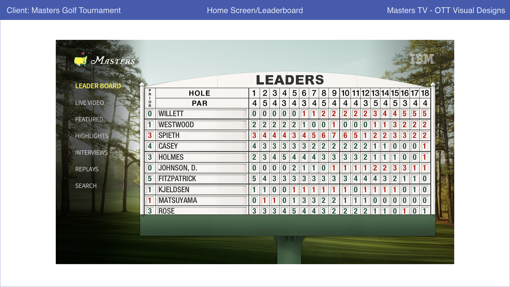
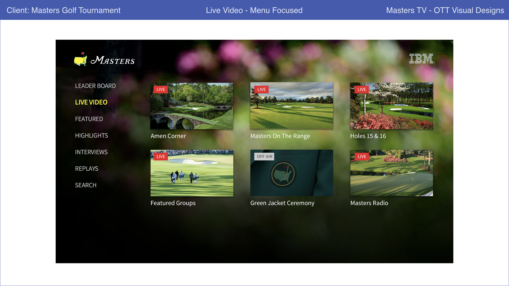
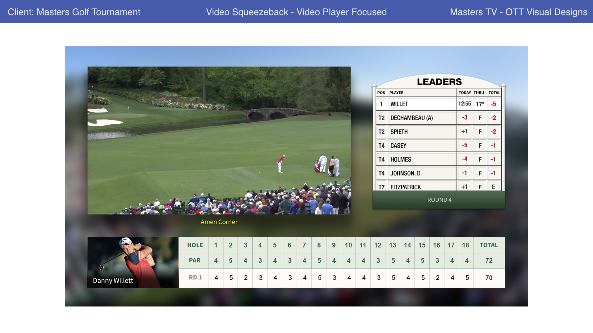

Year in, year out, the primary goal is to push the limits of bringing the tournament to life through digital means for those unable to be on the grounds. One experience to be be launched in 2017 is an over the top application for AppleTV, Roku, SmartTV, and Android platforms. Depending on the platform, users will be able to access content ranging from video on demand categories, to multiple live broadcasting stations.
To begin we had to run through a series of site map iterations to see what content would be the best for a TV streaming experience across the multiple platforms. One of the things we wanted to keep in mind was not to design for launching year one only, but how it might and could evolve in the coming years.

With the categories set for the first version, I wanted to iterate on as many navigation flow charts and potential page states as possible. While it might seem natural that a guest would want to peruse around for content as one does on a website or mobile experience, this is not so, a TV experience traditionally brings content forward for people to enjoy in groups. This would ultimately guide the design process and user journey for consuming content.

After a few iterations on paper, digital blueprints were built out and reviewed regularly with the client.

As we got closer to fully polishing the experience, visual designs were created.
  Not every individual on the project uses over the top devices. In order to put them in the mindset of a user operating the device, a small video clip was made through After Effects to bring the look and feel a little more to life than a static image. This was to make sure everything was set for our client before heading out to development.
It was a pleasure working with representatives from Augusta National Golf Club and the entire IBM Events staff that took part in the creation of the Application. If you want to watch the tournament differently this upcoming year and have an OTT device the application will be available this April. We also launched an AppleTV application for Wimbledon in 2016. While the look and feel might be different shown above the process we took was done in a similar manner.